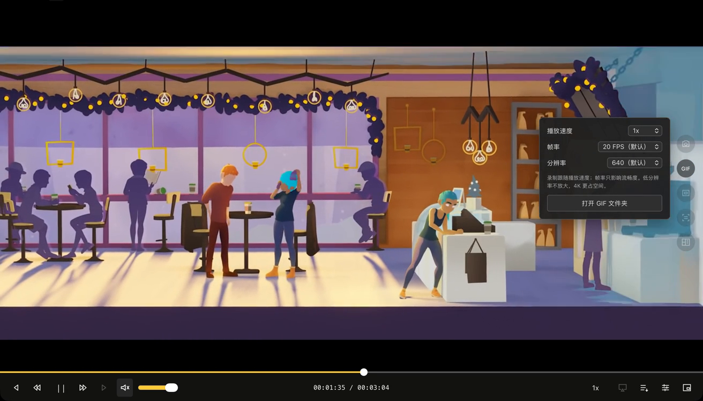
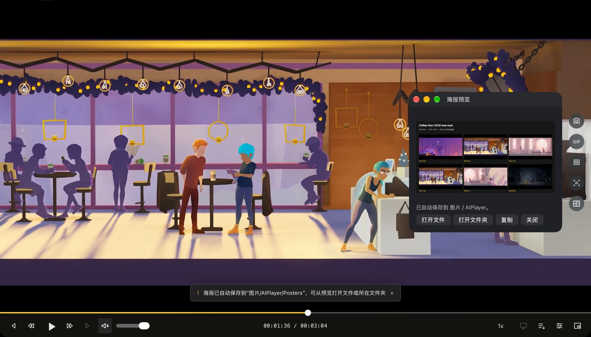

WATCH → CAPTURE → CREATE
每个精彩瞬间，
都有留下的方式。
不只是一份功能清单。这里说明 V1.1.2/build18 的具体用途、操作入口、参数和使用边界。配图取自历史真实宣传实录，不是重绘界面。
在线发现：搜索、选源、直接打开链接
在工作区搜索片名，从返回结果中选择来源并播放。也可通过「文件 → 打开视频链接…」（⌘L）打开有权访问的媒体 URL。「设置 → 源管理」可管理来源。
22 个初始接口来自上游历史公开列表。“聚合搜索”只表示向已配置来源查询，不等于搜索整个互联网、获得全部片库，或替你取得影片授权。第三方接口、封面、搜索与播放需要联网，可能失效或改变规则。
本站未放入权利不清的搜索结果电影海报。实际内容是否可以观看、保存或传播，需要分别确认。
本地媒体：按你的节奏观看
「文件 → 打开本地媒体…」（⌘O），或拖入媒体文件。播放队列便于连续观看；进度条定位、播放/暂停、前后跳转、速度和音量控制都在播放器内完成。
- 定位：拖动进度条，或快进/后退 10 秒，寻找要保留的瞬间。
- 速度：慢放观察动作细节，加速浏览片段。GIF 录制跟随当前播放速度。
- 原生播放：由 libmpv 处理媒体；格式支持取决于实际容器、编码与流，不承诺所有文件、损坏文件或受保护媒体都能播放。
全屏与画中画：给画面合适的位置
全屏观看减少桌面干扰；使用画中画让视频留在桌面一角，便于同时查资料或记笔记。控制入口位于播放器底部。可用性取决于当前媒体及系统支持。
本版不把“投屏”作为已完成功能；界面中存在的不可用入口，不代表可以向电视或其他设备投送。
截图与 OCR：留住画面，也提取文字
点击右侧「截图」保存当前画面；点击「识别当前画面文字」对当前画面进行本机文字识别，适合提取清晰的字幕、对白或画面文字。
- 文字识别使用 macOS Vision，本机处理，不是把影片发送给云端模型。
- 结果受清晰度、字体、语言、遮挡和背景影响，需要人工校对；不是翻译或剧情理解功能。
- 截图取自媒体画面，不要把窗口显示大小当作实际导出像素保证。
CAPTURE & SHARE / 动图工具
4K GIF 录制：把动态细节一起留下
不用离开播放器另开剪辑流程。观看有权使用的媒体时，选择录制尺寸、帧率和播放速度，在想要的位置开始，结束后自动保存 GIF。
- 打开媒体并定位到要录制的片段，展开右侧 GIF 工具的设置。
- 分辨率可选 640（默认）或4K（3840）。帧率可选 5、10、15、20、25、30 FPS，默认 20 FPS。
- 按需要调整播放速度，再点击 GIF 开始录制。录制跟随当前播放节奏；FPS 只控制采样流畅度，不等于播放倍速。
- 再次点击停止，等待编码保存完成。从 GIF 工具「打开 GIF 文件夹」或「文件 → 查看 GIF 成果文件夹」找到成果。

4K 的准确含义：最高输出宽度 3840，保持源比例。16:9 UHD 源可得到 3840 × 2160；较低分辨率源不会被放大成“伪4K”。竖屏及其他比例不承诺固定 3840 × 2160。
4K GIF 文件和临时帧更大，编码更耗时。源帧率、解码、设备与负载都会影响实际采样；选择 30 FPS 不代表任意媒体都能采满。GIF 使用调色板，不是无损全彩视频，也不包含音轨。
公开验证记录包括真实 UHD 源逐帧解码为 3840 × 2160、640/3840 两档与 0.5/1/2 倍速六组测试，以及录制中变速检查。这是已有工程记录，不是本站本次重新进行的软件性能验收。
MP4 片段：从一段观看，得到一个视频文件
使用「录制片段」在想保留的位置开始、停止，导出短片到本机 影片/AIPlayer/Clips/。与无声 GIF 不同，片段按实际媒体和导出能力处理视频及音轨。
来源、格式与可访问性会影响导出；不是绕过 DRM、付费访问或下载限制的工具。当前不支持字幕烧录，不承诺任意在线流都能导出。完成保存后再打开核对内容、长度及音轨。
电影海报：让已看画面有一个新封面
当前版生成 1200 × 1800 竖版 PNG：组合真实片名、已看画面、本地模板推荐文字和项目二维码。模板推荐不读取语义剧情，也不是模型生成影评。
- 在线视频：从观看过程中约每 5 秒保留的最多 6 张截图取图，最长边 1200 像素。不为取海报跳到尚未观看的片段；不足时使用实际单帧回退。
- 本地视频：已知时长且可定位时可进行六点采样。未知时长直播不支持海报生成。
- 保存：点击生成后保存 PNG 到本机；分享前核对片名、文字、画面使用权。

会话缓存：回看更方便，不是永久下载库
在线播放设置回看视频包上限 512 MiB、前向预取上限 128 MiB，不包含解码器和应用其他内存。有缓存时优先回看，超限旧片段会淘汰；切换片源或退出释放。
海报画面是另一组最多 6 张内存截图，不等于缓存了整段视频。首个关键帧组尚未完整或片段已淘汰时，回退可能需要联网；不能承诺断网后任意位置都能播放。
成果在本机，分享由你决定
截图、GIF、海报分别保存到 图片/AIPlayer/ 下的对应文件夹；视频片段保存到 影片/AIPlayer/Clips/。本发布网站不读取这些文件，也不要求上传影片。
AI 是产品品牌名。当前未接入模型服务、云账号或语义剧情分析。软件使用 AGPL-3.0-or-later，原生依赖保留各自许可；免费与开源不等于影片“无版权”。
演示影片 Coffee Run：(CC) Blender Foundation | studio.blender.org · CC BY 4.0。画面节选、静音及缩放，无第三方背书。真实界面为历史 build15；当前参数依据 V1.1.2 源码。完整素材说明。